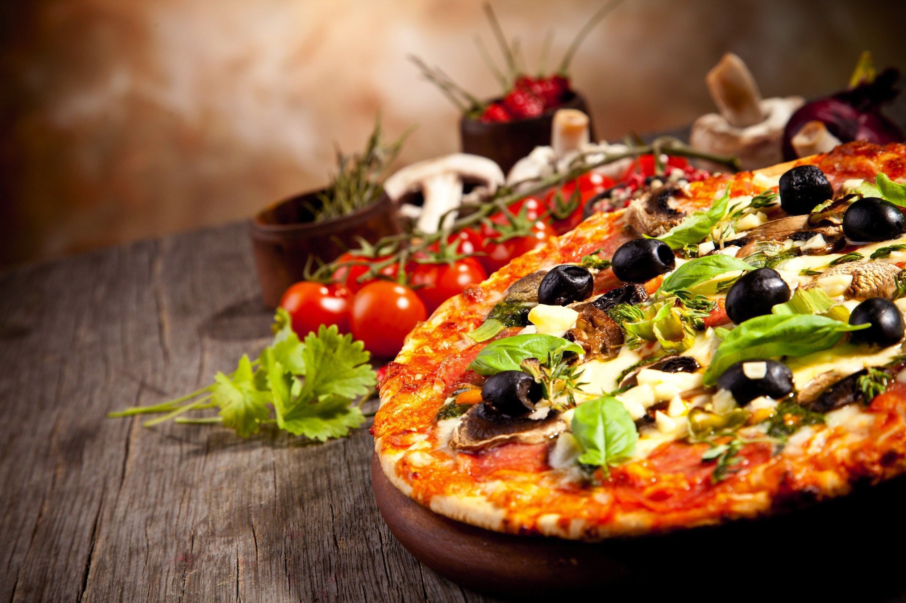
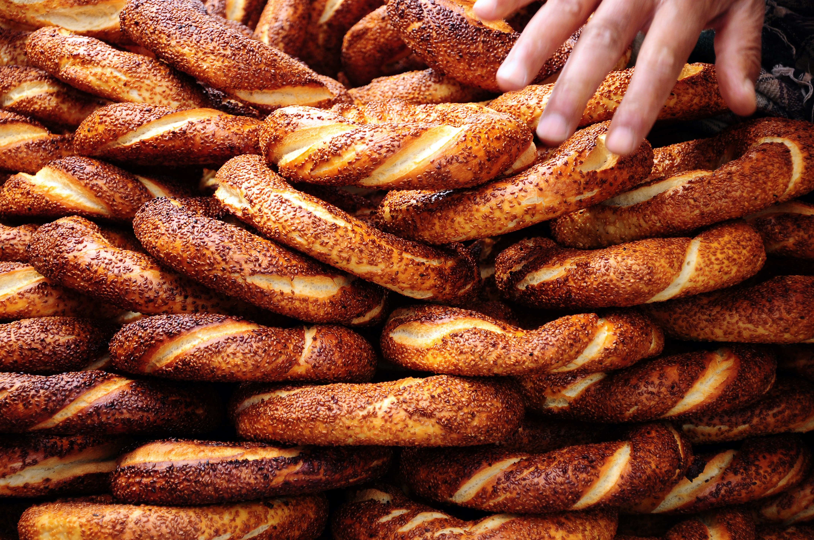
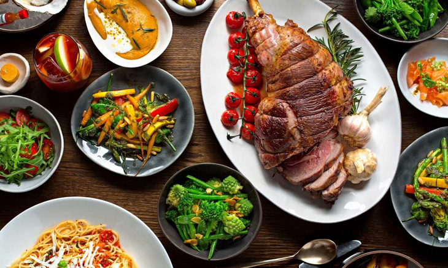

Food
If you’re planning a trip to Dubai, you need to make sure that you have a good grasp on Emirati cuisine. The food that you will find in the region will be unlike any food you’ve ever had, so you need to prepare yourself for an experience. Dubai is not short of great eateries; however, you should make sure that you find a place that suits you. To help, here is everything you need to know about food in Dubai.
There is not just one style of food in Dubai. Here you can get any style of food you desire. The main restaurants in the region take inspiration from Asian and Middle Eastern cuisine. That means that you can try everything from Indian to North Korean food in the area. Make sure to research each restaurant before you book your table to find the best places. Talk to the people in your hotel and see where they suggest. Dubai is a luxurious place, so everywhere you go will be high-class.

It’s a good idea to venture away from the hotel when traveling through Dubai. Often hotel cuisine is different from the cuisine in the rest of the area. The chefs at your hotel are likely used to cooking for Western tastes, meaning milder and less authentic cuisine.
As Dubai is a Muslim region, you will not find any pork dishes in the major restaurants. Instead, lamb, camel, beef and chicken are popular options. Just know that local chefs tend to use lots of heavy spices when they cook meat, so be prepared and adaptable.
Eating at your restaurant for a couple of nights is fine, but make sure that you try some local cuisine. There are many delicious Pakistani, Indian and Chinese restaurants in the city worth exploring.

When you are buying street food or food from a local restaurant, it is okay to haggle over the price of your dish. Many Westerners don’t like haggling, as they think it makes them look cheap. My tip? If you want to save money on food in Dubai, get comfortable with it. When somebody brings you the bill, you can question it. Ask if you can get a discount or whether they will accept a little less than the asking price. Make sure that you’re not too pushy, though, as this could come across as rude.
When you are buying street food or food from a local restaurant, it is okay to haggle over the price of your dish. Many Westerners don’t like haggling, as they think it makes them look cheap. My tip? If you want to save money on food in Dubai, get comfortable with it. When somebody brings you the bill, you can question it. Ask if you can get a discount or whether they will accept a little less than the asking price. Make sure that you’re not too pushy, though, as this could come across as rude.